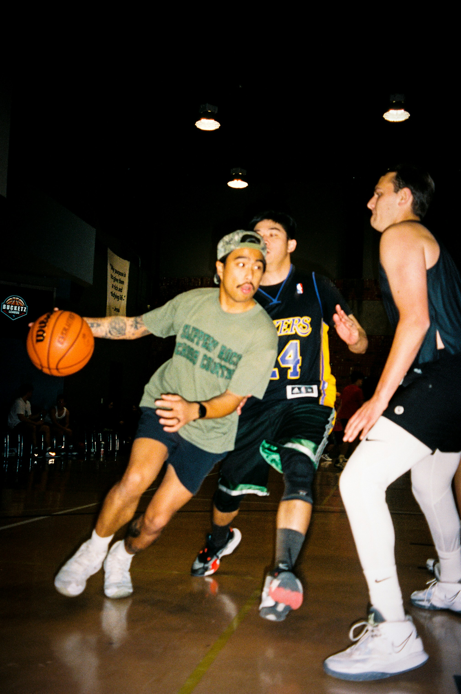

Local Basketball:
Basketball is one of New Zealand's largest growing sports. There are currently 27,000 secondary students participating in basketball. This makes it the third most popular sport for young people in our country. Students can get involved in basketball at their schools and can also join local clubs to get their game to the next level. Local Christchurch clubs include the Gators, Selwyn Hawks, NC Pumas, and Kahu. Clubs are still available to people out of highschool; most clubs have many divisions of teams suited to all skill levels. People can also get involved in social basketball. If you want to consider entering a team you can go to Basketball Christchurch. Social leagues are a great way to stay fit and connect with friends.
Local Professional Teams:
The NZNBL (New Zealand National Basketball League) is a regional competition highlighting some of New Zealand's best talent. The league was formed in 1981 and currently has 11 teams fighting for the title. It is the pinnacle of basketball in New Zealand. You can get involved by going down to watch the Canterbury Rams home games played out of Parakiore Stadium. They would love the support. All the broadcasting rights for this competition are owned by Sky Sport.